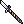
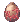

From Zero To Hero, The Fruit Salad's Guide for Royal Guards
| This guide has not been updated in a while. | ||
|---|---|---|
| Information on this page may be obsolete and outdated. Please refer to the author for information on future updates. Reason: "Last update in March 2017" |
||
Before I start this guide, I just want to clear up that Royal Guard's main role in PvM is to be a support tank via Devotion and not be the main tank. The reason for this is that Sura's Steel Body, Doram's Stoop, Tuna Party and Arclouse Dash and Warlock's White Imprison are more reliable forms of tanking especially with how hard mobs and MVPs hit at end game. I am not saying that Royal Guards in no way can be the main tank but they require more equipment and support to become a viable end game tank. That being said, they are very much capable of tanking early to mid game MVPs even with just an Alice Card. Despite that, in PvP, they are the more reliable tanks due to the nature of how massive their HP pools are and all the defensive capabilities they have. Most of their class specific equipments are also high on DEF which makes them naturally tanky. If you are new to the class, I hope that you find this guide informative. Feel free to use #support if you have any questions. Good Luck with your journey!
| Royal Guard | |||||||||||||||||||
|---|---|---|---|---|---|---|---|---|---|---|---|---|---|---|---|---|---|---|---|
 | |||||||||||||||||||
| Job Base: | Swordsman -> Crusader or Paladin | ||||||||||||||||||
| Written By: | The Fruit Salad | ||||||||||||||||||
| |||||||||||||||||||
Overview
Royal Guards (or commonly known as "RG") specializes in being able to do "almost" everything by Supporting itself and it's party thanks to Crusader's/Paladin's skills Heal, Devotion and Gospel/Battle Chant and the newly acquired skills: King's Grace and Piety while still being able to be a strong Offensive member by dealing a large amount of damage with Banishing Point, Cannon Spear and Overbrand or use Banding with other Royal Guards to be able to use Hesperus Lit and Ray of Genesis.
This guide focus more on what Royal Guards can do and should do when solo-ing and in a party set up (mainly for PvM). Whether you want to farm or be competitive in getting MVPs or be annoying and supportive in PvP as much as possible.
Stats
This section will help you understand what each Stats will do. Since Royal Guards have the option to be a Support, Tank or DPS, it will all come to what your preference will be. If you want to party or if you want to solo which also differs on PvM (Player versus Monster) and PvP (Player versus Player)
- STR - Your main Stat for DPS as it will not only increase your ATK but it also scales very well with Overbrand. It also increases your Weight Limit in which you need for equipping RG only equipment while also carrying consumables.
- AGI - Another main Stat for DPS if you would want to focus on using Banishing Point as your main source of DPS. Not only does it give Flee (which increases survivability) and ASPD, but it also gives you resistance to Bleeding, Sleep and Shadow Chaser's Masquerade Skills.
- VIT - The most important Stat of all as it increases your MaxHP, softDEF and HP recovery. A very important Stat for those who are using Devotion for supporting and Sacrifice as their main source of DPS. It also gives resistance to Blind, Crystallization, Poison and Stun. It also reduces the duration of most Status Effects.
- INT - An "okay" Stat since the main reason you will every get this is for increasing your MaxSP for spamming skills and Silence immunity. It also does give some SoftMDEF which is always nice for tanks.
- DEX - An important Stat for DPS as it will help increase your HIT rate that makes your attacks connect with enemies. It also scales with Overbrand and helps with reducing Variable Casting Time of skills.
- LUK - A not mandatory Stat since the only time you will put points into it is for Stat Point efficiency [which means that putting points into other Stats is more beneficial than putting it into one Stat. A good example of it is not maxing STR for ATK and stopping at a certain number (usually 120) and putting it into LUK]. It does give a lot of benefits like ATK, CritRate/Shield, Perfect Dodge and A LOT of resistance against Status Effects.
Skills
I will only discuss what are the essential skills that a Royal Guard should know since there will be skills that you wont put any points on or will only put on them since they are a pre requisite of more important skills.
Swordsman Skills
| Skill | Notes |
|---|---|
 Bash Bash
|
Your main DPS when leveling as a Swordsman. Also increases the damage of Banishing Point depending on it's level.
Recommended Level : 10 for Overbrand |
 Magnum Break Magnum Break
|
Your first AoE Skill as a Swordsman. Pretty good in mobby places such as Payon Cave. It also gives a 20% Fire Property Strength Enhancement after casting the skill that lasts for 10 seconds. A legit way of increasing damage especially against Earth Property Monsters, most notable is Old Glast Heim'sRoot Of Corruption.
Recommended Level : 4 - 10 |
 Increase HP Recovery Increase HP Recovery
|
Increases HP recovery and allows you to recover HP while moving thanks to Moving HP Recovery
Recommended Level : 10 |
 Endure Endure
|
Resists flinching from enemy attacks temporarily, allowing to escape without being slowed down by damage. This skill also increases HardMDEF when the skill is active. Especially useful when using Devotion as this is also transferred to your Devo'ed party member.
Recommended Level : 10 |
 Provoke Provoke
|
Increases ATK while decreasing DEF of the target. Useful for changing or keeping agro in parties.
NOTE: DOES NOT AFFECT UNDEAD AND DEMON RACE MONSTERS Recommended Level : 5 - 10 |
Crusader / Paladin Skills
Mostly Supportive Skills that you will still use even if you are already a Royal Guard.
| Skill | Notes |
|---|---|
 Faith Faith
|
Increases your MaxHP by 200 per level and Holy Resistance by 5% per level. Max this as this is a pre requisite for Devotion and this also makes you tanky as hell in the early game.
Recommended Level : 10 |
 Auto Guard Auto Guard
|
Gives you a chance to block ANY physical attack. This can also be shared using Devotion.
NOTE: It has a small delay on every successful block. It may be annoying especially if you are trying to spam a skill. Recommended Level : 5 - 10 |
 Spear Mastery Spear Mastery
|
Increases the damage you deal with Spears. It works on both One Handed and Two Handed Spears. Also a pre requisite for Spear Quicken.
Recommended Level : 1 for Tanks / 10 for DPS |
| Peco Peco Riding | Enables you to ride a Grand Peco / Griffon. It also changes your Size Modifier into Large, gives an additional 1000 Weight Capacity and increases your Movement Speed BUT you need to max Cavalier Mastery to fully nullify Riding's ASPD reduction.
Recommended Level : 0 or 1 (Cavalier Mastery : 0 for tanks / 5 for DPS) |
| Holy Cross | Your new main DPS after becoming a Crusader. It deals more damage than Bash and is Holy Property.
NOTE: If you are using a Two Handed Spear, Holy Cross will deal 2x damage thus making it easy to one shot Shadow and Undead Property Monsters Recommended Level : 10 for leveling / 6 as pre requisite |
 Spear Quicken Spear Quicken
|
Increases ASPD and CritRate depending on the level. It also increases the damage of Overbrand.
NOTE: The skill description doesn't state about the increase in CritRate but if you check your Status Tab, it increases it. Recommended Level : 0 for Tanks / 10 for DPS |
 Pressure / Gloria Domini Pressure / Gloria Domini
|
Mainly a PvP skill, it deals a fixed amount of damage while also draining the target's current SP. A good counter against Suras that are about to cast Asura Strike and Mage's Energy Coat.
Recommended Level : 0 for PvM / 5 for PvP though it can be skipped. It all comes down to preference |
 Reflect Shield Reflect Shield
|
Reflects a certain amount of damage (depending on the skill level) back to the attack after being hit with melee attacks. It's main use is to keep agro from monsters. It is also considered as an attack coming from you and can trigger Auto Casts like Faceworm Queen's Leg Transformation and Earthquake. Can be shared via Devotion.
Recommended Level : 5 is enough as pre requisite |
 Defender Defender
|
Reduces movement speed and ASPD at the cost of significantly reduces long ranged physical attacks. A must have and maxed to remove ASPD penalty and for supporting and tanking as it can also be shared via Devotion.
Recommended Level : 5 |
 Devotion Devotion
|
One of the best supportive skills in the game. This skill is what makes the Crusader Class known for. It makes you protect a party member by receiving ALL the damage that is intended for your party member. It also shares all the Self Buffs that the Crusader has such as Auto Guard, Endure, Reflect Shield and Defender. The targeted ally's Skill Casts cannot be interrupted even in WoE and BG which makes this skill a MUST HAVE for those who intend to participate in PvP content and PvM parties. Best use is to target all the supports and the tank to make the Arch Bishop's life easier.
NOTE: Level range should be within 10 levels and YOU CANNOT TARGET OTHER CRUSADERS / PALADINS / ROYAL GUARDS Recommended Level : 5 / Preference |
 Gospel / Battle Chant Gospel / Battle Chant
|
Performs a hymn that will cause one of many different negative effects on enemies and will cause one of many different positive effects on party members by a regularly recurring chance within the area of effect. Maintaining this skill active will drain HP and SP. It also removes any positive and negative buffs that you may have. If the target has acquired a buff/debuff, they can acquire a new buff/debuff if they're still in the Area of Effect or return to it every 10 seconds. Here is the LIST of effects from Gospel / Battle Chant.
Recommended Level : 0 or 10 (for 100% chance to inflict effect) |
| Sacrifice | Not to be confused with Devotion, this allows to inflict Neutral property damage for the next five normal attacks at cost of 9% of the user's Max HP each. These hits pierce defense and ignore the accuracy check. This is the main DPS of Devotion and Tank build Royal Guards.
Recommended Level : 0 or 5 |
Royal Guard Skills
Now for the fun part!
| Skill | Notes |
|---|---|
 Banishing Point Banishing Point
|
One of your main DPS as it is easily spammable with high ASPD and is not reliant on having a Minstrel for Bragi. It's long range and is one of your early DPS on becoming a Royal Guard. Can easily achieve high DPS with Expert Archer Enchants and Long Range ATK modifiers but having high ASPD can be hard to come by if you are solo-ing.
Recommended Level : 10 for DPS |
 Exceed Break Exceed Break
|
A self buff that makes the next attack deal a large amount of damage depending on the weapon's weight and weapon level. Acts similarly like Sacrifice but only for one hit. A great follow up after using all your skills.
Recommended Level : 0 or 5 |
 Force of Vanguard Force of Vanguard
|
Boosts maximum HP, physical defense, and grants a chance of building rage for a Rage Counter while taking damage. Rage Counter is used for Burst Attack. Rage is similar to Monk's Spirit Spheres wherein it gives a fixed amount of damage that doesn't miss. Also, the DEF boost isn't show on the Status Window.
Recommended Level : 5 |
 Piety Piety
|
A pretty straight forward buff that endows a target and nearby allies with Holy Property.
Recommended Level : 0 or 5 |
| Reflect Damage | An improved version of Reflect Shield wherein the damage that you receive will be reflected on ALL the enemies in a 7x7 cell area around the you. It makes proc-ing Auto Casts much easier. Most notable is Hero Plate's Heal and Storm Gust.
NOTE: It has a reflect limit and it drains SP per second. Only use it if you need to proc Hero Plate's Heal and Storm Gust to create space if need be. Recommended Level : 3 or 5 |
 Pinpoint Attack Pinpoint Attack
|
One of your main offensive skill in PvP as it can remove Spirit Spheres or break the target's Shield, Armor or Weapon. It can also be used as a form of "blink" in PvM scenarios wherein the Royal Guard may have problems getting near mobs, most notable scenarios are the "Raydric" part of Old Glast Heim and killing Cecil Daemons in Bio Labs / Endless Tower. Damage scales with AGI.
Recommended Level : 1 or 5 |
 Burst Attack Burst Attack
|
A very situational skill that if used correctly can deal a HUGE amount of damage. The more Rage Counters you have and the lower your current HP is, the greater your damage will be.
Recommended Level : 0 or 1 |
 Trample Trample
|
Performs a crushing stomp that has a chance of destroying any traps around the user, including any the user may be caught in. Explosive traps will still detonate normally, but there is a chance of dodging their damage.
Recommended Level : 3 |
| Prestige | One of the best defensive skills in the game as it not only increases your HardDEF but also gives you a chance of dodging Magic Attacks depending on your INT and LUK stats. A must skill if you're planning to be the main Tank in the party.
Recommended Level : 3 (gives 100% upkeep at this level) or 5 (more DEF and magic dodge) |
| Earth Drive | Probably one of the most underused skills from Royal Guards but also one of the most useful. It can hit concealed enemies and revealing them and remove any ongoing ground skills in the Area of Effect. Pretty powerful in any scenario as it can save you and your party from a strong spell.
Recommended Level : 2 (mainly for getting Shield Spell) |
 King's Grace King's Grace
|
Places a temporary buff on the user and all players nearby that blocks all damage, regenerates a portion of their Max HP every second, and purges and protects them of several status effects also making them unable to move, attack or use skills. They can only do is talk or sit until the duration. A pretty strong spell that if used properly, can save the whole party from a disaster, most notable scenario is from an MVP's Earthquake, Comet or Hell's Judgement.
NOTE: Casting this skill will remove Devotion from party members under the user's protection. Recommended Level : 0 - 5 |
 Cannon Spear Cannon Spear
|
Cannon Spear has a longer, though narrow AoE than Overbrand, costs half as much SP, doesn't require a wall for optimum damage, and does not scatter mobs. Another thing to point out is that it shares it's main weapon with Banishing Point which is an Imperial Spear thus making it easier to make it "the AoE" skill for Banishing Point builds. Also scales with STR.
Recommended Level : 0 - 5 |
 Overbrand Overbrand
|
One of the strongest skills in the game. Even without a good gear, you can easily deal around 30-50k damage with it (accounting that both Pierce and Smash damage hit). It is important to max it as soon as possible to make leveling and farming easy. One thing to remember is that under the effects of Bragi, it is spammable and the only thing that is slowing you down is ASPD and how fast can you click spam Overbrand. For it's AoE, check this link. Scales with STR,DEX and Spear Quicken's Level.
Recommended Level : 5 (I suggest maxing this skill no mater what build you're going) |
 Banding Banding
|
A buff that only activates when other Royal Guards in your party have Banding activated. It gives A LOT of ATK and DEF while also share same average HP with one another and they will regenerate HP 50% faster. Royal Guards that are Banded will be able to use Hesperus Lit and Ray of Genesis. Not only does it make you strong but it also makes your BOND with other Royal Guards stronger!
Recommended Level : 0 - 5 |
 Ray Of Genesis Ray Of Genesis
|
The super upgraded version of Grand Cross that is targeted and can only be used while Banding with other Royal Guards and Inspiration. It deals Holy Hybrid Damage in a 11x11 area around that target. A pretty strong skill with draw backs, use with caution or under Banding.
Recommended Level : 0 - 5 |
 Hesperus Lit Hesperus Lit
|
A very strong damage skill that requires three or more Royal Guards in Banding. The damage and number of hits is further increased by the number of Royal Guards in Banding thus making it possible to one shot a lot of things with 12 Royal Guards using Banding and Hesperus Lit.
Recommended Level : 0 - 5 |
 Shield Spell Shield Spell
|
A self buff that gives random effects depending on the level of the skill and the DEF, MDEF and Refinement of the equipped shield. For more info, go to this link. At least 1 point is recommended if you are going for a DPS oriented build and 3 points for tanking.
Recommended Level : 1 for DPS and 3 for Tanks |
 Inspiration Inspiration
|
A self buff that gives a massive amount of ATK, HIT, Stats and doubles your MaxHP. It removes all buffs and debuffs upon activation and requires 1% Base Experience. While under Inspiration, your HP and SP is slowly draining over time and drains 1% MaxHP for every attack or offensive skill. It also allows the use of Hesperus Lit and Ray Of Genesis when Inspiration is active.
Recommended Level : 0 - 5 |
 Full Throttle Full Throttle
|
Fully restores HP, increases all base stats by 20% and doubles movement speed. I usually use it when I don't have any consumables with me and need an emergency "Yggberry" or in conjunction with Inspiration to triple my DPS. Though there may be a "Rebound" status wherein after Full Throttle's buff expires, you will be slowed and prevents natural HP and SP recovery for 10 seconds. It also has a very long cooldown of 30 minutes. Use it wisely if you're ever going to get it.
Recommended Level : 0 - 5 |
Equipment
Now this section varies on what build are you trying to achieve. Feel free to mix and match depending on your preference and situation.
Headgears
| Item | Type | Ways to obtain | Notes |
|---|---|---|---|
 Abysmal Knight Helm [1] Abysmal Knight Helm [1]
|
Upper | Military Headgear Box from the Cash Shop (4000 CC) | A good item for reducing damage from MVPs (a better alternative than Anubis Helm since it only uses the Upper Headgear slot). |
 Ship Captain Hat [1] Ship Captain Hat [1]
|
Upper | Cash Shop (5000 CC) | The best headgear for builds that focus on using Banishing Point as it's main DPS skill.
Increases Long Range Physical Attacks by 7%, +1 DEX and +100 MaxHP. |
 Ancient Decoration of Rift [1] Ancient Decoration of Rift [1]
|
Upper | Infinite Space Instance | Increases MaxHP by 1000. If refined to +7, increases MaxHP by 400. If refined to +9, increases MaxHP by 600. Can also be enchanted twice wherein the best enchant possible is +8 to a Stat or +8% MaxHP. One of the best headgears for tanking and Devo-ing or for maximizing the damage of Cannon Spear with STR enchants. |
 Ancient Gold Ornament [1] Ancient Gold Ornament [1]
|
Upper | Wolfchev's Laboratory Instance | Gives +2 to all stats and gives 8% ATK (too bad it's considered as Class Bonus). Best headgear for Overbrand builds and can be enchanted. |
 Asgard Blessing [1] Asgard Blessing [1]
|
Upper | Vending Machine @go eden (500 Gold Coins) | One of the best tanking items in the game. Gives +2 to all stats, 5% reduction to all properties and regenerates 2% of MaxHP and 1% MaxSP every 10 seconds even if you are overweight and is slotted. |
| Divine Guard's Helm [1] | Upper | Cash Shop (5000 CC) | Reduces damage from all sizes by 5%. If upgraded to +7, gives you 1% chance to Auto Cast Heal level 5 (or depending on the level learned) whenever you receive damage. If upgraded to +9, increases Ray of Genesis damage by 20%. Another great item for tanking and for those who wants to use Ray of Genesis as their main source of DPS. |
 Feather Beret [0] Feather Beret [0]
|
Upper | Quest | Reduces damage from Demi-Human enemies by 10%. +1 MDef. A must have if you're planning to PvP or go to Bio Labs. |
 Gigantic Majestic Goat [0] Gigantic Majestic Goat [0]
|
Upper | Sealed Shrine Instance | Increases Physical Damage against Demi-Humans by 12%. Increases ATK depending on the Job Level. A pretty good headgear for increasing damage especially against Demi-Human targets. Looks pretty cool too! |
 Gray Helmet [1] Gray Helmet [1]
|
Upper | Ghost Palace Instance | Increases resistance to Holy property by 3%. Every 2 refines increases resistance to Holy property by 1%.
Part of the Gray Set. |
 Modified Corsair [1] Modified Corsair [1]
|
Upper | Upgrading Corsair via Energy Crystal @go Eden | Increases VIT by 1 and MaxHP by 5%. If refined to +7, increases Neutral Resist by 1%. If refined to +9, increases MaxHP by 3%. Another good headgear for tanking and Devo-ing. |
 Rideword Hat [1] Rideword Hat [1]
|
Upper | Custom Headgear Quest / Cash Shop (5000 CC) | A good headgear especially for those who are new to the server. It gives a chance to leech HP and SP depending on your damage. It ensures that you wont be coming back to town unless you are 90% Weight. I highly suggest that you do the quest instead of buying it from the Cash Shop. |
 Runaway Chip [1] Runaway Chip [1]
|
Upper | Last Room Instance | MaxSP -50%, FLEE +50 and HIT +50. If refinement is +9, MaxHP +10% and MaxSP +50%. If equipped with Broken Chip 1 and 2, ATK and MATK +50 and increases movement speed by 40%. A good alternative for Ancient Gold Ornament and Pendant of Maelstroms if you want the HP increase (considering it's a +9 Runaway Chip). The set bonuses are just too good not to pass it up. |
 3D Glasses [0] 3D Glasses [0]
|
Middle | Assorted Headgear Box from the Cash Shop(4000 CC) | Increases resistance against Neutral Property attacks by 5% (confirmed via @battlestats in game). Another great item for tanking. |
| Advanced Fin Helm [0] | Middle | Upgrading Fin Helm via Energy Crystals @go Eden | Gives a good amount of HP. Useful for those starting out and for Devotion/Sacrifice builds. |
 Angel Wing Ears [1] Angel Wing Ears [1]
|
Middle | Yuno Headgear Quest and slotting it requires a Spiritual Auger from the Cash Shop (7500 CC) | Gives +1 STR and probably will be one of your early headgears in the game. Slotting it will be costly. Has the same stats as Evil Wing Ears[1] but easier to get. |
 Black Frame Glasses [1] Black Frame Glasses [1]
|
Middle | Cash Shop (5000 CC) + Spiritual Auger for slotting (7500 CC) = 12500 CC | Gives +1 INT and +2 MDef. Probably the most expensive and most fashionable middle headgear available. |
 Blush Of Groom [0] Blush Of Groom [0]
|
Middle | Cash Shop (5000 CC) | Reduces damage from Demi-Human enemies by 3%. A must have if you're planning to PvP or go to Bio Labs |
 Monocle [0] Monocle [0]
|
Middle | Owl Marquees / Owl Viscount | Has no effect other than being slotted. A pretty good item for using Myst Case Card or Engkanto Card. |
 Sigrun's Wings [0] Sigrun's Wings [0]
|
Middle | Cash Shop (5000 CC) | It gives +1 ASPD, mainly used for getting high ASPD and skill spamming. |
 Donut in Mouth [0] Donut in Mouth [0]
|
Lower | Custom Headgear Quest | Gives +100 MaxHP and recovers 1 HP every 10 seconds. An easy to make headgear and alternative for the more expensive Umbala Spirit. |
 Gangster Scarf [0] Gangster Scarf [0]
|
Lower | Custom Headgear Quest / Cash Shop (5000 CC) | Gives +5 ATK. Good for increasing damage. |
 Gentleman's Pipe [0] Gentleman's Pipe [0]
|
Lower | Cash Shop (5000 CC) | Reduces damage from Demi-Human enemies by 2%. A must have if you're planning to PvP or go to Bio Labs. If you want an alternative sprite, Poker Card in Mouth does the same at the same price which also available in the Cash Shop. |
 Samurai Mask [0] Samurai Mask [0]
|
Lower | Military Headgear Box from the Cash Shop (4000 CC) | Increases Class ATK by 1%. Arguably better than Gangster Scarf if you have more than 600 ATK. |
| Scarlet Rose [0] | Lower | Valentine's Day Pack from the Cash Shop (7500 CC) | Increases ATK and MATK by 1% and MaxSP by 30. Best Lower Headgear for DPS. |
| Spare Card [0] | Lower | Cash Shop (5000 CC) | Gives 50% chance of obtaining Blank Card whenever you kill a monster. Best lower headgear for farming. You can trade Blank Cards at the second floor of the Main Office located in Prontera. Best trade-in would be Oridecon Box for upgrading or for selling. |
 Umbala Spirit [0] Umbala Spirit [0]
|
Lower | Lower Hat Box from the Cash Shop (4000 CC) | Increases MaxHP by 1% and healing from Meat by 25%. Gives a chance to drop Meat when killing monsters. Perfect for tank builds. |
Cards
| Item | Notes |
|---|---|
| +300 MaxHP and if your LUK is equal or greater than 77, it increases your HP and SP recovery by 100%.
One of the best headgear cards for Tanking. | |
| Every 2 refine increases MaxHP by 1%. | |
| ATK +10 and gives a certain chance to obtain a poisonous herb when killing a monster. A good alternative for Essence of Evil STR 3 and Duneyrr Card especially if you're just starting out. | |
| Increases resistance to Earth Property attacks by 10%. Also gives a chance to get Green Live when killing Plant type monsters. You mainly get this if you need Earth resistance. | |
| ATK +10 and gives a certain chance to increase Perfect Dodge by 10 for 4 seconds when dealing physical damage. A useful card both for offense and defense. Can also proc from reflect. | |
| Increases damage against Poison Property and ignores defense of Plant type monsters by a certain rate. Mainly used for Faceworm's Nest Instance. | |
| Increases resistance to Wind Property attacks by 10%. Also gives a chance to get Wind Of Vedure when killing Insect type monsters. You mainly get this if you need Wind resistance. | |
| +2 STR. Gives +1 STR for every 3 refine. | |
| Increases resistance to Water Property attacks by 10%. Also gives a chance to get Crystal Blue when killing Fish type monsters. You mainly get this if you need Water resistance. | |
| Increases resistance to Fire Property attacks by 10%. Also gives a chance to get Red Blood when killing Brute type monsters. You mainly get this if you need Fire resistance. | |
| Enables the user to detect hidden enemies. Mainly a PvP card. | |
| Gives Immunity to Silence | |
| Chance to get Gift Box whenever you kill a monster. Perfect for farming as you have a large Weight Limit. | |
| Inceases resistance against Shadow and Undead attacks. You mainly get this for the resistances. | |
| Increase natural HP and SP regeneration rate by 25%. Recover +30 HP and +3 SP each time a monster is killed by Physical Melee Damage. When upgraded to +7, each melee attack recovers an additional +10 HP and +1 SP. Best compounded on a Rideword Hat or Asgard Blessing for greater effects. You literally wont come back to town unless you're 90% Weight Limit. | |
| +4 STR, -4 INT and ATK +12. Best "card" for DPS builds. Can be obtained from Demon God Instance. | |
| +4 VIT, -4 AGI, +12 DEF and +8 MDef. One of the best "cards" for Tank builds as you can easily get 100 MDef by compounding it on multiple equipments. Can be obtained from Demon God Instance. |
Armors
| Item | Ways to obtain | Notes |
|---|---|---|
 Armor Of Airship [0] Armor Of Airship [0]
|
Wyvern (5%) and Gold Acidus (5%) from Airship Instance | Your first upgrade after Eden Armor. Gives a huge amount of HP and SP thanks to the set bonus. Probably the one of the best armor you can use for tanking. |
 Armor Of Gray [1] Armor Of Gray [1]
|
Ghost Palace Instance | Gives a good amount of Holy Property resistance per piece and refinement which makes it a good set to use when going up against Tendrillions (with Bathory Card) at The Monster Hunter content. |
 Glorious Suit [0] Glorious Suit [0]
|
Battlegrounds (2000 Valor Badges) | Gives 20% MaxHP and reduces damage from Demi-Humans by 7%. A good armor overall which can also be enchanted. |
| Hero Plate [1] | Bios Island Instance / Morse's Cave Instance | Probably the best all around armor for Royal Guards. It gives MDef, a huge amount of DEF, +5% MaxHP and SP, +10 ATK, MATK, FLEE and HIT, increases damage of Banishing Point by 10% and it also gives a chance to cast Heal Level 10 and Storm Gust Level 10 when attacking wherein the chance increases depending on the refinement rate. This armor is a double edged sword, whenever Heal and Storm Gust procs, it gives a huge delay on the wearer unless you have Bragi, but it gives you a massive amount of survivability by proc-ing them via Reflect Damage making you cast Heal and Storm Gust like crazy! |
| WoE Plate [1] | Guild Dungeon Investment System | Another armor great at PvP. It can give a total of 21% damage reduction from Demi-Humans if you're wearing the set and if its upgraded to +9, it gives +25% MaxHP. A must have if you're planning to PvP. |
| Cash Shop (4000 CC) / Ifrit (10%) / Kraken (20%) / Ferre (0.10%) | This is very situational, as you only need Elemental Armors for specific MVPs and instances. The slotted fire armor, Lucius's Fierce Armor Of Volcano can only be obtained from Ifrit. The slotted water armor, Saphien's Armor Of Ocean can only be obtained from Kraken or you can get Frozen Breastplate as an alternative from Ferres in Nightmarish Jitterbug Instance in which you can also get a slotted earth armor, Harden Breastplate from the same instance. If you need wind armor, it's better that you use a Dokebi Card on a slotted proxy armor. Also, all 4 elements are available at the Cash Shop (though there are better items for you to use for your Cash Points). |
Cards
| Item | Notes |
|---|---|
| Enchants armor with Shadow Property. Your main armor card especially if you are planning to go Geffenia, Old Glast Heim and Tendrillions at The Monster Hunter content. | |
| Adds a 6% chance of inflicting Stone Curse on an enemy whenever the wearer receives Physical damage. It's a pretty good way of crowd controlling mobs especially on the "Raydric" part of Old Glast Heim. Take note that Undead Property Monsters are immune to Stone Curse. Alternative to Pest Card. | |
| Enchants armor with Wind Property. Increases DEF by 1. | |
| Enchants armor with Undead Property. Increases INT and DEF by 1. A great card for solo-ing as it gives you immunity to Stone Curse and Freeze and having high resistances to Shadow, Undead and Poison Property attacks. Do note that you cannot be Healed or Resurrected but Token of Siegfried still works. | |
| Enchants armor with Ghost Property. Reduced HP recovery by 25%. Probably the best card for reducing Neutral Property damage. This gives you the ability to survive Earthquake, Comet and MVPs in general. Both good for PvM and PvP. | |
| Gives immunity to Freeze and increases resistance to Water Property by 5%. One of the best armors for PvP just because of how strong Freeze status is. Also a must in Malangdo Culvert Instance. | |
| Enchants armor with Fire Property. Increases DEF by 1. | |
| Increases MaxHP by 10%. A good card for increasing survivability. | |
| Increases ATK by 25 and reduces DEF by 5.
Good for increasing DPS especially if you don't need any property enchants on your armor. | |
| Gives 3% chance to Stun an enemy when the wearer receives Physical Damage. This chance is increased to 9% when Base DEX is equal or greater than 77. Same function as Dark Frame Card. Mainly for crowd controlling mobs. The good side is that it affects Undead Property Monsters but not monsters with high enough VIT to have Stun Immunity. | |
| Enchants armor with Earth Property. Increases DEF by 1. | |
| Enchants armor with Water Property. Increases DEF by 1. |
Weapons
| Item | Ways to obtain | Notes |
|---|---|---|
| Lance [1] | Prontera Weapons Seller | Your first weapon for leveling as a Crusader or Paladin. Two-Handed Spears make Holy Cross deal double damage making leveling on Glast Heim easy. |
 Long Horn [1] Long Horn [1]
|
Cornus / Fallen Bishop | A good upgrade from Lance due to it's Holy Property and indestructibility, especially when you already have access to Overbrand. Also a decent tanking weapon with Valkyrja's Shield due to having a chance to cast Assumptio or increase your ATK with Tournament Shield. |
 Thanatos Spear [1] Thanatos Spear [1]
|
Ghost Palace Instance | Another good upgrade from Lance since it gives HP/SP Leech, +6 INT and VIT. It can be one of your end game weapons if over refined. Best weapon for farming. |
| Crimson Spear [2] | Stem Worm / Naga | Best One-Handed Spear for Overbrand builds but requires it to be refined at +15 to fully maximize it's effects. Do note that each Crimson weapon has it's own enchanted property. |
| Crimson Lance [2] | Gryphon / Owl Duke / Anacondaq | Best Two-Handed Spear for Overbrand builds but requires it to be refined at +15 to fully maximize it's effects. In my opinion, Crimson Spear can easily beat Crimson Lance just because of the existence of Mad Bunny and the Knightage Card Set. But since those are luxury items, it's actually better to start with a Crimson Lance just because of how easy to get and cheap they are. |
|  Glorious Spear [0] | Battlegrounds (2000 Valor Badges) | One of the best weapons for PvP, no questions asked, especially if it's refined more than +14, Slaughter's effect will just rekt most players in PvP. |
 Hunting Spear [0] Hunting Spear [0]
|
Kraken / Fallen Bishop / Boitata / Leak | A spear mainly used for Exceed Break due to how heavy it is and it's Weapon Level. Can be enchanted in Malangdo. |
| Imperial Spear [1] | Gold One-Horned Scaraba / Scaraba | The main weapon for Banishing Point builds due to the +20% increase damage of Banishing Point and Cannon Spear while every 2 refine also increases the damage by 3% which can also be enchanted in Malangdo with Expert Archer to further increase Banishing Point and Cannon Spear damage. |
Cards
| Item | Notes |
|---|---|
| Increase damage on Boss monsters by 25%. Sometimes, having 2 White Knight Cards are better than having 1 White Knight Card and 1 Abysmal Knight Card since the damage difference is very minimal. | |
| Increases Ranged Attack Damage by 10%.
A good starting card for Banishing Point builds. | |
| Gives a 3% chance of gaining 15% of the damage inflicted on an enemy as HP with each attack.
Best compounded on a Thanatos Spear. | |
| Increases damage on Demi-Human monsters by 20%. Recommended for PvP. | |
| ATK +15. Increases damage against medium and large monsters by 20%. If shield is compounded with Khalitzburg Knight Card, increases additional damage against medium and large monsters by 15% and receive less damage from medium and large monsters by 5%. Best Card Set for both defense and offense. Can be obtained from Old Glast Heim Instance. |
Shields
| Item | Ways to obtain | Notes |
|---|---|---|
 Bradium Shield [1] Bradium Shield [1]
|
Bradium Golem | Gives +500 MaxHP, reduces AGI by 1 and increases damage of Shield Boomerang by 60%.
A good starting shield. Also relatively cheap. |
 Immune Shield [1] Immune Shield [1]
|
Battlegrounds / Vending Machine @go Eden / Monster Hunter Shop / Loyalty Shop | Increases Neutral Property resistance by 1% every refine when upgraded to +5. At +7, additional Neutral Property resistance by 5%. At +9, increases resistance to Wind, Earth, Water and Fire properties. |
 Mad Bunny [1] Mad Bunny [1]
|
Cash Shop (6000 CC) | Increases ATK and MATK by 5%. If refined to +7, +5 ATK/MATK. If refined to +9, +15 ATK/MATK. At +12, Cast Uninterruptable and CRIT +10. A great shield for improving DPS. Do note that it has 0 DEF. |
 Platinum Shield [0] Platinum Shield [0]
|
Sword Guardian | Reduces damage medium and large sized monsters by 15% and reduces damage from Undead monsters by 10%. It also has a 40% chance to reflect magic for 2 seconds with each magic attack. +5 MDef. Also a good starting shield. |
| Rosa Shield [1] | Dark Pinguicula / Alicel / Alice | One of the three shields with the highest DEF stat. Mainly used for using Shield Spell Level 1 for getting the highest possible ATK bonus from it. Always keep one in your inventory. |
 Sacred Mission [1] Sacred Mission [1]
|
Ktullanux / Socket Enhancing | Best shield for solo MVP-ing or if your party has no Genetic for Chemical Protection.
Cannot be destroyed, has high DEF, +2 INT, +3 VIT and MDef. |
 Gray Shield [1] Gray Shield [1]
|
Ghost Palace Instance | Gives +30% Holy Resistance, +10 MDef, every refine increases Holy resistance by 1% and every 3 refine increase MDef by 1. Mainly for achieving 100% Holy Resistance. |
| Thorny Buckler [1] | Knocker | +2 MDef. If used with Bison Horn, +10% ASPD and Reflect 5% of melee damage.
Pretty useful for Banishing Point builds. |
| Tournament Shield [1] | Hardrock Mammoth | +1% ATK. If used with Long Horn, Hunting Spear or Battle Hook, increases DEF by 2 and ATK by 4%. |
 Valkyrja's Shield [1] Valkyrja's Shield [1]
|
Valkyrie | Increases resistance against Water, Fire, Shadow and Undead Property by 20%. Increases MDef by 5. |
Cards
| Item | Notes |
|---|---|
| Reduces damage from Boss Monsters by 40%. Increases damage from Normal Monsters by 40%
A must have when tanking MVPs especially at end game. | |
| Increases MaxHP by 5%. A good starting card for survivability and Devo-ing. | |
| Increases resistance against Water property attacks by 20%. Increases damage against Water property by 5%.
You mainly get this for the resistance. | |
| Increases resistance against Poison property attacks by 20%. Increases damage against Poison property by 5%.
You mainly get this for the resistance. | |
| Increases resistance against Holy property attacks by 20%. Increases damage against Holy property by 5%.
You mainly get this for the resistance. | |
| Increases resistance against Shadow property attacks by 20%. Increases damage against Shadow property by 5%.
A pretty good card if you're planning to farm on Geffenia and Glast Heim. | |
| Increases resistance against Earth property attacks by 20%. Increases damage against Earth property by 5%.
You mainly get this for the resistance. | |
| Add a 30% resistance against Stun, Curse, Blind, Stone Curse. Add a chance of auto casting Stun, Curse, Blind, Stone Curse when the user receives Physical Damage. Mainly used for crowd controlling. | |
| Increases resistance to all Sizes by 15%. Has a chance to gain +30 Perfect Dodge whenever the user receives Physical or Magical damage. A good card for general use. | |
| DEF +20. Increases resistance to Medium and Large size monsters by 25%. If weapon is compounded with White Knight Card, additional increase in resistance to Medium and Large size monsters by 5% and additional increase in damage against Medium and Large monsters by 15%. Best Set Card for both offense and defense. Can be obtained from Old Glast Heim Instance. | |
| Increases resistance against Wind property attacks by 20%. Increases damage against Wing property by 5%.
You mainly get this for the resistance. | |
| Increases resistance to Neutral property attacks by 20%. Increases damage to Neutral property by 5%.
You mainly get this for the resistance. | |
| Reduces damage from Demi-Human monsters by 30%. Recommended for PvP. |
Garments
| Item | Ways to obtain | Notes |
|---|---|---|
 Manteau Of Airship [1] Manteau Of Airship [1]
|
Airship Assault Instance | Increases resistance to Neutral property by 10%, +10 FLEE, Reduces Variable Casting Time by 20%. A set piece for Airship Set. Your best upgrade for Eden Manteau. |
 Giant Snake Skin [1] Giant Snake Skin [1]
|
Faceworm's Nest Instance | Gives +10 MDef. Can have random Stat enchantments depending on how lucky the instance runners (highest possible stat is 18) and refinement is based on how fast the run was (highest possible refinement is +11). High AGI is for Banishing Point, High STR is for Cannon Spear and Overbrand, and High VIT for tanks and Devotion/Sacrifice builds. When you are using Upgraded Temporal Boots, it gives +15% MaxHP and 5% MaxSP. |
 Gray Cloak Gray Cloak
|
Ghost Palace Instance | Increases resistance to Holy Property by 5%. Every 2 refine increases resistance to Holy Property by 1%. |
| Heroic Backpack [1] | Battlegrounds / Loyalty Shop / Monster Hunter Shop / Vending Machine @go Eden | I just want to point out that it needs to be +7 or +9 and have at least 90 Base Stat to have a specific effect. It gives +20/+30 ATK (STR), +30/+50 MATK (INT), +5/10% Neutral Resistance (VIT), +8%/+8% and 1 ASPD (AGI), +5/10% Long Range ATK (DEX) and +10/15% Crit Damage. Enables the use of Greed Lvl 1. Probably the best all around garment. |
 Nidhoggur's Shadow Garb [1] Nidhoggur's Shadow Garb [1]
|
Nidhoggur's Nest Instance | +3 MDef, increase resistance to ALL elements. Increases MaxSP depending on the refinement and also gives a SP Leech. |
 WoE Manteau [1] WoE Manteau [1]
|
Battlegrounds | +1 MDef and Reduces damage from enemy players by 2%. If worn with WoE Plate and Greaves, gives a total of 21% damage reduction from Demi-Humans. A must for PvP. |
 Fallen Angel Wings [1] Fallen Angel Wings [1]
|
??? | Soon |
Cards
| Item | Notes |
|---|---|
| Every 10 Base AGI increases ASPD by 2%. A card for those who are looking to increase ASPD for skill spamming. | |
| Increases resistance to Neutral property attacks by 50%. Decreases resistance to ALL other property attacks by 50%. Makes PvM a piece of cake. Combo it with the right Elemental armor and you can solo any PvM content. | |
| Increases resistance to Wind property attacks by 30%. +5 FLEE. You mainly get this if you need the resistance. | |
| Increases resistance to Earth property attacks by 30%. +5 FLEE. You mainly get this if you need the resistance. | |
| Increases resistance to Shadow property attacks by 30%. +5 FLEE. You mainly get this if you need the resistance. | |
| Increases resistance to Fire property attacks by 30%. +5 FLEE. You mainly get this if you need the resistance. | |
| Every 10 Base VIT increases MaxHP by 200. Good for Devo-ing. | |
| Increases resistance to Ghost property attacks by 30%. +5 FLEE. You mainly get this if you need the resistance. | |
| Increases resistance to Water property attacks by 30%. +5 FLEE. You mainly get this if you need the resistance. | |
| Every 10 Base DEX increases Long Range Attack Damage by 1%. Perfect for increasing Banishing Point and Cannon Spear damage. | |
| Increases resistance to Poison property attacks by 30%. +5 FLEE. You mainly get this if you need the resistance. | |
| Increases resistance to Neutral property attacks and Long range attacks by 10%. | |
| Increases resistance to Undead property attacks by 30%. +5 FLEE. You mainly get this if you need the resistance. | |
| Increases resistance to Neutral property attacks by 20%.
Effective for decreasing damage against you in PvM. Try to get this as soon as possible. | |
| Every 10 Base STR increases ATK by 5. Best card for increasing overall damage especially Overbrand. | |
| Soon |
Shoes
| Item | Ways to obtain | Notes |
|---|---|---|
 Boots Of Airship [1] Boots Of Airship [1]
|
Airship Assault Instance | +1 AGI. Increases ASPD by 10%. Your first upgrade from Eden Boots.
A must have to complete the set bonus with Airship Armor and Manteau. |
 Boots Of Gray [1] Boots Of Gray [1]
|
Ghost Palace Instance | Increases Holy resistance by 2%. Every 3 refine increases Holy resistance by 1%. |
 WoE Greaves [1] WoE Greaves [1]
|
Battlegrounds | +1 MDef. Reduces damage from enemy players by 2%. If worn with WoE Plate and Manteau, gives a total of 21% damage reduction from Demi-Humans. A must for PvP. |
 Temporal Boots of Agility [1] Temporal Boots of Agility [1]
|
Old Glast Heim Instance / Upgrading Temporal Boots | Increases MaxHP by +300 and MaxSP by +30. For every 3 refine level, MaxHP +100, MaxSP +10, ASPD +3%. If base AGI is 120 or higher, ASPD +1. Best enchanted with Fighting Spirit or Expert Archer with Bear's Might, Hawk Eye or Lucky Day. Mainly for reaching 190-193 ASPD for skill spamming. |
 Temporal Boots of Dexterity [1] Temporal Boots of Dexterity [1]
|
Old Glast Heim Instance / Upgrading Temporal Boots | Increases MaxHP by +300 and MaxSP by +30. For every 3 refine level, MaxHP +100, MaxSP +10, DEX +3. If base DEX is 120 or higher, fixed casting -0.5 sec, long distance attack power +5%. Best enchanted with Fighting Spirit or Expert Archer with Bear's Might, Hawk Eye or Lucky Day. Best boots for increasing damage of Banishing Point and Cannon Spear. Also a viable choice for Overbrand since you can achieve instacast with it. |
 Temporal Boots of Strength [1] Temporal Boots of Strength [1]
|
Old Glast Heim Instance / Upgrading Temporal Boots | Increases MaxHP by +300 and MaxSP by +30. For every 3 refine level, MaxHP +100, MaxSP +10, ATK +7. If base STR is 120 or higher, ATK +50. Best enchanted with Fighting Spirit with Bear's Might, Hawk Eye or Lucky Day. Best boots for increasing damage overall especially for Overbrand builds. |
 Temporal Boots of Vitality [1] Temporal Boots of Vitality [1]
|
Old Glast Heim Instance / Upgrading Temporal Boots | Increases MaxHP by +300 and MaxSP by +30. For every 3 refine level, MaxHP +300, MaxSP +10. If base VIT is 120 or higher, MaxHP +8%. Best enchanted with MaxHP+2% with Muscular Endurance or Speed Of Light. Best tanking and Devo-ing boots combo'ed with Giant Snake Skin for the set effect. |
 Variant Shoes [0] Variant Shoes [0]
|
Beelzebub | Increases MaxHP and MaxSP by 20%. Maximum HP / Maximum SP reduced by 1% per refine rate. Every refinement adds +1 DEF.
A good substitute when you need HP and SP. Don't refine this. |
 Enhanced Variant Shoes [1] Enhanced Variant Shoes [1]
|
Battlegrounds / Loyalty Shop / Monster Hunter Shop / Vending Machine @go Eden / Upgrading Variant Shoes via Energy Crystals @go Eden | Increases MaxHP and MaxSP by 12%. Each refine increases DEF and MDEF. Another good substitute for increasing survivability. |
Choosing your Temporal Boots
This section focus more on the LAST ENCHANT of Temporal Boots. Why they are good and why you should pick them.
- Bear's Might -
Cards
| Item | Notes |
|---|---|
| STR +2. If the footgear is refined to +9, increases MaxHP and MaxSP by 10%. One of the best cards for offense and defense as long as the refined footgear is +9. | |
| Increases MaxHP and MaxSP by 4%. If the footgear has a refinement not greater than 4, additional increase in MaxHP and MaxSP by 4% and increases HP and SP recovery by 5%. | |
| Increases MaxHP by 2%. When receiving physical or magical damage, has a chance to recover 1000 HP per second for 5 seconds. | |
| VIT +1. Increases MaxHP by 10%. | |
| AGI +1. Increases MaxHP by 10%. | |
| ATK and MATK +1%. MaxHP -2%. Every 2 refine increases ATK and MATK by 1% and reduces MaxHP by 2%. A great card for increasing damage but do note that it will also decrease your MaxHP. Use it at your own risk. | |
| Increases MaxHP and MaxSP by 8%. | |
| Recovers 50 HP whenever you physically kill a monster in melee range. Increases physical and magical damage against Demi-Humans by 1%. A good card for sustaining especially if you are farming. |
Accessories
| Item | Ways to obtain | Notes |
|---|---|---|
 Advanced Safety Ring [1] Advanced Safety Ring [1]
|
Upgrading Safety Ring via Energy Crystal @go Eden | DEF +10, MDef +5 and +1 to All Stats.
A viable tank item especially if you want to have high MDef. |
| Bakonawa Agimat Tattoo [0] | Pintados Festival | Increases ATK by 7% and ASPD by 10%.
Perfect for spamming Banishing Point. |
| Bison Horn [1] | Beelzebub | AGI +2.
You mainly get this for the bonus effect with Thorny Buckler. Good for spamming Banishing Point. |
 Broken Chip 1 and 2 [1] Broken Chip 1 and 2 [1]
|
Last Room Instance | STR +4 for 1 and INT +4 for 2. If used together, +8 STR and INT.
Best use with Runaway Chip for +50 ATK/MATK and increased movement speed. |
 Buffalo Horn [1] Buffalo Horn [1]
|
Custom Equipment Quest (NPC is located South of Yuno) | +1 ASPD. If equipped with Bison Horn, +1 ASPD. Another great accessory for Banishing Point |
 Glorious Ring [0] Glorious Ring [0]
|
Battlegrounds | Increases MaxHP by 300, ASPD +5%, resistance against Water, Wind, Earth, and Fire properties attack +10%. Variable Casting Speed reduced by 3%. Increase effectiveness of Healing skills by 5%. If equipped with Medal Of Honor, increases ATK by 5% and MATK by 3%. Increases healing effectiveness of skills by 5%. A great item especially if you need the resistances. |
| Medal Of Honor [0] | Battlegrounds | Increases ATK and MATK by 5%, HIT by 10, MaxHP by 500 and MaxSP by 50. Add 1% chance of auto casting Stun on the enemy when attacking. A good early accessory to increase damage especially if you already obtained Valor Badges from the Daily Rewards making it literally free. |
 Pendant Of Harmony [0] Pendant Of Harmony [0]
|
Nightmarish Jitterbug Instance / Awakened Ferre | Increases MATK by 6%, HP and SP recovery by 50% and Holy property resistance by 5%. When physically attacking, there is chance to activate Level 1 Renovatio. While physical attacks from enemies cast Level 3 Sanctuary. STR -5. One of the best tanking accessories as it gives a lot of sustain thru Renovatio and Sanctuary. |
 Pendant Of Maelstrom [1] Pendant Of Maelstrom [1]
|
Nightmarish Jitterbug Instance | Increases ATK and MATK by 6%. +1 to All Stats. When receiving magic attacks from enemies, has a chance to cast Level 1 Maelstrom. The best accessory for dealing damage. |
 Physical Enhancer Ring [1] Physical Enhancer Ring [1]
|
Geffen Magic Tournament Instance | ATK +5%. An alternative to Pendant Of Maelstrom if you don't want any delays because of Maelstrom procs. |
 Red Lantern [1] Red Lantern [1]
|
Horror Toy Factory Instance | MaxSP -300. Enables the use of Level 1 Sight. Killing monsters has a chance to drop Alcohol, Detrimindexta and Karvodailnirol. Can be enchanted using Bloody Coins. Probably the best farming accessory just because of how easy it is to sell Alcohol and Karvodailnirol. |
| Ring Of the Ancient Wise King Chain Quests | Increases MaxHP by 50 and MaxSP by 20. Required item if you want to talk to Laphines and Saphas. Also a requirement in accessing Nightmare Scaraba Hole. | |
 Silverwork Bracelet [1] Silverwork Bracelet [1]
|
Old Glast Heim Instance | +1 to All Stats. MDef +3. Enables the use of Level 5 Spell Breaker. A good starting accessory. Also fairly cheap. |
 STR Glove [1] STR Glove [1]
|
Eclage Quests | Increases MaxHP by 100 and MaxSP by 20. Gives +1 ATK per 10 Base STR. +1% ATK if Base STR is 110. A good starting accessory mainly for increasing damage. |
| VIT Glove [1] | Eclage Quests | Increases MaxHP by 100 and MaxSP by 20. Gives +50 MaxHP per 10 Base VIT. +1% MaxHP if Base VIT is 110. A good starting accessory for starting tanks. |
 Sarah's Right Earing [0] Sarah's Right Earing [0]
|
Sarah and Fenrir Instance | Enables the use of Level 1 Teleport.
It can be enchanted with Expert Archer, ASPD and After cast delay which is all good for Banishing Point. |
 Enhanced Ring Of The Flame Lord [0] Enhanced Ring Of The Flame Lord [0]
|
Upgrading Ring of the Flame Lord via Energy Crystals @go Eden | STR +3, VIT +2, ATK +20, Increase Fire property resistance by 10% and when dealing physical damage auto casts a LOT of skills. Perfect combo with Reflect Damage or Reflect Shield in mobby places. Has a combo effect with Advanced Ring of Resonance. |
 Enhanced Ring Of Resonance [0] Enhanced Ring Of Resonance [0]
|
Upgrading Ring of Resonance via Energy Crystals @go Eden | AGI +3, VIT +1, MDef +2, MATK +10 and when receiving physical damage auto casts a LOT of skills. Perfect for tanking as it can auto cast Assumptio and Heal. Has a combo effect with Advanced Ring Of The Flame Lord. |
Cards
| Item | Notes |
|---|---|
| Reduces Long Range damage against you by 5%. | |
| Enables the use of Level 1 Teleport | |
| Gives a 5% chance of casting Pneuma on the user whenever it receives physical damage. | |
| ATK +20. Decreases MaxHP by 1%. Best card for increasing damage. | |
| Gives a chance of obtaining Old Blue Box whenever you kill an enemy. Best card for farming. | |
| +4 STR, -4 INT and ATK +12. An alternative for Gold Scaraba Card. Can be obtained from Demon God Instance. | |
| +4 VIT, -4 AGI, +12 DEF and +8 MDef. One of the best "cards" for Tank builds as you can easily get 100 MDef by compounding it on multiple equipments. Can be obtained from Demon God Instance. |
Pets
Pets are actually an important part of the game. I can't stress enough of how strong some of them are especially the utility they can give. They literally give at least an effect of a card or an equipment when they become Loyal. They also attack from time to time. Feel free to pick and choose between the best pets available for the game.
| Item | Notes |
|---|---|
 Alice Alice
|
MDEF +1,Reduces damage from DemiHuman enemies by 1%. |
| Goblin Leader | Increases damage against Demi-Human targets by 3% |
| Green Maiden | DEF +1, Reduces damage from DemiHuman enemies by 1% |
| High Orc | ATK +25. Can be obtained from Random Egg Pack from the Cash Shop.
Best Pet for increasing damage. |
 Incubus Incubus
|
MaxSP +5%. Gives a chance of gaining 1% of the damage dealt as SP.
Best alternative to Rideword Hat and Thanatos Spear for late game. |
 Loli Ruri Loli Ruri
|
MaxHP +5%. Adds chance of auto casting Level 1 Heal on the user when the user receives Physical Damage.
One of the best pets for Devo-ing and tanking. |
| Marionette | Has a low chance of activating +20 resistance to Neutral property monsters while being physically attacked.
Probably the best pet for tanking. |
 Little Poring Little Poring
|
Increases HP recovery by 50%.
Another great pet for tanking. |
 Succubus Succubus
|
Gives 1% chance of gaining 5% of the damage dealt as HP.
A good pet for sustaining HP. |
|  Tikbalang | Increases damage against Bakonawa, Bangungot and Buwaya by 10%. MDEF +3.
Best Pet against Malaya Instance MVPs. |
 Whisper Whisper
|
FLEE + 7, enables the use of skill level 1 Hide.
Best use for PvP and saves Accessory Slot for better options. |
Builds
These builds will focus more on PvM rather than PvP.
The Farmer
This build will focus more on what gears are preferred when you choose Royal Guard for farming. They are great farmers since this build will focus more on STR thus having a huge amount of Weight Capacity and being tanky means that you wont have any trouble of dying unless lag happens.
Stats
- STR 120 - 130
- AGI 90 - 100
- VIT 90
- INT 50 - 90
- DEX 90 - 100
- LUK The rest goes here
Do note that it is recommended to have at least 90 INT to have Silence Immunity and to avoid having SP problems if ever you still don't have Rideword Hat, Thanatos Spear and Incubus Pet OR RNGesus isn't with you that SP leech doesn't proc. (always remember to pray)
Skills
- Overbrand Lvl 5 - your main DPS especially for mobbing large quantities of monsters
- Banishing Point Lvl 10 - alternative DPS if there are only few mobs in the map or if you can one hit them
- Auto Guard Lvl 10 - essential for surviving
- Shield Spell Lvl 1 - increases your damage. very essential for faster mob killing
- Force of Vanguard Lvl 5 - increases your MaxHP, HardDef and gives Rage Counters similar to Spirit Spheres. A great skill of Offense and Defense.
- King's Grace Lvl 5 - just incase you need healing or invulnerability
- Spear Quicken Lvl 10 - increase ASPD, CritRate and Overbrand damage.
- Reflect Damage Lvl 5 - if you ever need to proc Heal and Storm Gust from Hero Plate
Equipment
- Upper Headgear - Rideword Hat [1] OR Wind's Guide [1] with Myst Case Card
- Middle Headgear - Monocle [1] with Myst Case Card
- Lower Headgear - Spare Card
- Armor - Airship Armor or Hero Plate [1] with Porcellio Card or Bathory Card for Gefenia and Glast Heim
- Weapon - Thanatos Spear [1] or Thanatos Long Spear [1] with any damage increasing Card (Santa Poring Card is great and cheap for Gefenia and Glast Heim. White Knight Card for general use but expensive, Hunter Fly Card for HP leech)
- Shield - Rosa Shield [1] / Platinum Shield / Mad Bunny [1] with Hodremlin Card, Khalitzburg Knight Card or any card for survivability / damage reduction
- Garment - Heroic Backpack [1], Manteau of Airship or Giant Snake Skin [1] with Wakwak Card or Raydric Card
- Footgear - Temporal Boots of Strength or Boots of Airship with any recommended card in the Equipment section
- Accessories - Red Lantern [1] or Silverwork Bracelet [1] with Mimic Card and/or Creamy Card (don't opt for this if you already have Wind's Guide)
- Pet - Incubus
Strategy
You can farm in the following:
- Gefenia = Sell everything to the NPC. Type @alootid -12020|-1974|-1919|-1421|-1478|-15037|-15036|-2318. This will make you not loot Cursed Water, Carrot Whip, Base Guitar, Battle Hook, Ahlspiess, Peuz's Plate, Ur's Plate and Lord's Clothes respectively. White Herb can be stored for Vending/@autotrade. Gemstones can also be stored just incase you want to have a Class that uses them. (Sorcerers and Arch Bishops)
- Glast Heim (gl_cas02) = Sell everything to the NPC EXCEPT for Worn Out Page, Bookclip in Memory and all the Books for making a Rideword Hat. Oridecon can be sold via Vending/@autotrade or keep it for upgrading your weapon (preferably Crimson Spear with Holy or Neutral Property). Type @alootid -15036|-2318|-15037|-2266|-1164|-13015|-2270|-2269. This will make you not loot Ur's Plate, Lord's Clothes, Peuz's Plate, Iron Cane, Muramasa, Hakujin, Romantic Leaf and Romantic Flower.
- Lighthalzen Field (lhz_fild02) = Sell everything to the NPC EXCEPT for Witch Stardust, Rough Oridecon, Crimson Spear, Crimson Revolver, Yggdrasil Seed, Dead Branch, and Delicate Foxtail Model. This is the best spot for farming your Crimson Spear (if you ever choose to go Overbrand build) while being able to farm Rough Oridecons to turn them into Oridecons and use them to upgrade your Crimson Spear. Do note that Crimson Weapons have different elemental properties so always check. Best properties to have are Holy, Neutral and to some extent, Fire. Type @alootid -2270|-2269|-1968|-1733. This will make you not loot Romantic Leaf, Romantic Flower, Skipping Rope and Gust Bow.
- Abyss Lakes (abyss_03) = Sell everything to the NPC EXCEPT for White Wing Brooch and Immortal Stew. White Wing Brooch and Green Ferus Card can easily be sold to players via Vending/@autotrade. Be careful not to get mobbed and from the MVP especially if you are not prepared or geared. Detale has Reflect Shield which can easily kill yourself with Overbrand.
- Thanatos Tower (floors 2, 6 and above) = Floor 2 is specifically for Old Blue Box and Old Purple Box farming, Floor 6 is for Crimson Bows and Floors above 6 are very hard to farm especially with the presence of the "of Thanatos" mobs. If you ever got strong enough, you can easily farm Floors above 6 and can even rival that of Gefenia.
Gameplay and Trivia
- If you are in a party, even if you are a DPS build, always have Devotion for your main Tank and Supports! This makes the run easier and makes the Arch Bishop's role easier especially in healing.
- If you have other Royal Guards in the party, always communicate and try to persuade them into Skill Resetting for Banding. Its a very powerful buff that is unique to Royal Guards. It will give you a lot of ATK, DEF, HP and recovery. It will also give you access to "Banding Only" skills such as Hesperus Lit and Ray Of Genesis (which can also be used if you are under the effects of Inspiration).
- Gospel and Inspiration will remove all positive and negative buffs on cast.
- Sometimes, it's better to just use Gospel on the party's main DPS as they can receive increased stats and double damage.
- Shield Spell buffs doesn't wore off even if you remove the equipped shield.
- Always have a Rosa Shield[1] in your inventory as it gives the most ATK from Shield Spell Level 1.
- Shield Spell Level 2 can cast Magnificat. Just make sure that the shield you are wearing has MDEF.
- Force of Vanguard is cancelled when you use King's Grace.
- Overbrand has no cooldown if you are under the effects of Poem Of Bragi making it your best DPS skill in party situations.
- Pinpoint Attack is considered as a long range attack. It can be blocked by Pneuma and the leap effect doesn't work in WoE.
- Rage Counters from Force Of Vanguard doesn't miss thus making Overbrand knockback enemies with it. If enemies have high FLEE (or activated Increase AGI) use Overbrand to knock them back to the wall to deal damage (collision damage cannot miss). Effective against Suffering Khalitzburg at Old Glast Heim. It has a lot of practical uses, that is just one of them. ;)
- King's Guard makes EVERYONE outside of PvP be invulnerable and do nothing for the duration, making it a good way to "steal" or "secure" an MVP for a friend or guildmate.
Leveling
The places that I will put in this section is mainly for solo players as I assume that most players that will read this is either new to the server or new to the class. If you are going with a party, there are other places that are better to start at. You can also check the Leveling Guide.
Lv 1 - Lv 99
- Lv 1 - Lv 12 Novice
- Just follow the Mini Tutorial with Captain Carocc. If you did it right, you can easily change Job at the Prontera Main Office after registering to the Criatura Academy.
- Lv 13 - Lv 45 Swordsman (even though you're a Spearsman)
- Go to Izlude and ask for the "Increase AGI Aco" NPC for Increase AGI (duh!) and warp to Payon Cave. (Have at least 20-30 DEX to be able to hit things and then go YOLO with STR to one hit monsters with BASH) After you have maxed both Bash and Increase HP recovery, go to the second floor and spam Bash on Soldier Skeletons and Archer Skeletons for more XP. Try to avoid Drainliar as they have high FLEE and Eggyra as they have high DEF. Do note that weak mobs now give Fly Wing, making it easier to navigate maps at early levels. Use the free Novice Potions for healing. They will give you tons so drink away! After reaching Level 45, I'm pretty sure that you are now able to change your Job into Crusader, so go back to Prontera's Main Office and change Job! Also, sell all the loots you get from Soldier Skeletons and Archer Skeletons (except for Archer Skeleton Card which you can sell to players for at least 5-7m depending on the demand) and get a Lance at the Weapons Shop (upper right side of the Prontera Fountain).
- Lv 45 - Lv 74 Crusader (Your journey as a Crusader)
- Go back to Payon Cave Floor 2 and Bash monsters until you get Holy Cross. At this moment, you can pretty much one shot all the mobs at Floor 3 thanks to your new Lance and Holy Cross (Holy Cross deals double the damage if the equipped weapon is a Two Hand Spear). Feel free to go to Floor 4 and 5 if you are confident that you can one shot monster with Holy Cross. Continue killing until you reach Level 74. You should have at least 50 DEX at this point to be able to hit monsters for the next step.
- Lv 74 - 87 Crusader (Ez Bugatti)
- At this level, go to Eden Headquarters and register to Secretary Lime Evenor. Talk to Instructor Ur and you should be given a quest at Glast Heim St. Abbey. Before teleporting there, go "talk" to Mission [71-85] and get the quests for hunting Evil Druid and Wraiths. After completing the quest Instructor Ur gives you, you will now be given Eden Equipment for you to use when doing Gramps! (In which will be your equipment until Level 125) NOTE!: The quests the you got from Mission [71-85] should not be given in.
- Lv 87 - Lv 99 Crusader (The Struggle for Rebirth)
- Level range to join the first bracket of Gramps quests. Note that Gramps quests are rotated at the start of every month. You can also hunt them outside of Gramps map. Use the
@whereis (monster name)command to find out where a monster spawns. At this level (BTW, I suggest that you Stat reset and focus more on VIT and AGI since your main role here is to tank and lure), you should start Gramps by shouting in #lfg and look for potential members for your Gramps run. Don't forget to take the Gramps Quest located just left side of Gramps. Also, go up stairs and get all the Turtle Island quests from 86-90 Mission Board. Your main role for Gramps is a lurer via Provoke and tanking them for the DPS and AoE class to finish them off. Before you even finish the Gramps Quest, you will easily reach level 99, even so, stay and finish the Gramps Quest. After finishing the Gramps Quest, DO NOT TURN THEM IN! INCLUDING THE TURTLE ISLAND QUESTS! And Rebirth.
- Level range to join the first bracket of Gramps quests. Note that Gramps quests are rotated at the start of every month. You can also hunt them outside of Gramps map. Use the
- Rebirth up to 3rd Job (Time To Be A Royal Guard!)
- After becoming a High Novice, go kill some Little Porings until you are able to change Jobs.
- After becoming a High Swordsman (Spearsman), go do the Cautious Village Quest. After completing the quest, you should be able to change Job into Paladin.
- After becoming a Paladin, this is now the time that you should turn in your Gramps Quest! If you are short on 1 Job Level, you can either go in and kill some mobs OR turn in one of the Turtle Island Quests and ask for more Job EXP to be able to change your Job into a Royal Guard.
Lv 100+
- Lv 100 - Lv 114 (The Awakening)
- Just continue doing Gramps until you reach Level 145. AS SOON AS POSSBILE, GET OVERBRAND! So that you can also start farming for your equips. You should also start doing pre requisite quests for Wolfchev's Laboratory. You can start with Biolab's Entrance Quest.
- Minimum level to access Sara's Memory in which you will farm Stat Food for future use and Infinite Space.
- Just continue doing Gramps until you reach Level 145. AS SOON AS POSSBILE, GET OVERBRAND! So that you can also start farming for your equips. You should also start doing pre requisite quests for Wolfchev's Laboratory. You can start with Biolab's Entrance Quest.
- Lv 115 - Lv 144 (OVERBRAND EVERYTHING)
- Level range to join the second bracket of Gramps quests.
- By the way, if you have just finished 85-114 Gramps Quest, you can immediately do the 115-144 Gramps quest.
- At this Level, you should be doing the second quest of the pre requisites for Wolfchev's Laboratory which is the Factory Quest.
- Lv 120 gives you access to
- Nightmarish Jitterbug in which you can solo in the future! Feel free to look for parties that are doing this instance as it also gives a lot of EXP.
- Ghost Palace in which should start doing ASAP everytime it is off cooldown. Farm your Thanatos Spear, after that, you can sell the Gray Shards to players for Zeny
- I'm pretty sure that you can already start doing the Einbroch Murder Quest since you've just finished doing the Factory Quest.
- Lv 125 gives you access to
- Airship Assault in which you will get your first upgrade of equipments! You can solo this, just make sure to bring some consumables or duo with an Arch Bishop that you can Even Share with.
- Now that you've just finished doing Einbroch Murder Quest, it's time to start President Quest at least up to Step 9 if you're not in the right time, you can start doing Cursed Spirit Quest.
- Airship Assault in which you will get your first upgrade of equipments! You can solo this, just make sure to bring some consumables or duo with an Arch Bishop that you can Even Share with.
- Lv 130
- Minimum level to access Old Glast Heim Normal Mode in which you can ask #lfg for potential party members. If you are going to tank, make sure that you have a Valkyrja's Shield with Alice card, Manteau of Airship with Raydric Card and Long Horn. Also, be sure to only use that Alice carded shield against MVPs or else normal monsters will rape you.
- Lv 140
- Minimum level to access Horror Toy Factory, Central Laboratory, Malangdo Culvert, Bakonawa Lake.
- You must complete Cautious Village and Bakonawa Extermination to access Bakonawa Lake.
- Minimum level to do Dimensional Travel. This is a pre-requisite quest to access Bios Island.
- I suggest that you start doing the pre requisites of these instances as this is the level wherein Gramps Quest only gives around 1-2 levels. Also a good time to be farming some of your equips or start doing the Dangerous Rumors Quest. Do note that accessing Wolfchev's Laboratory requires you to be Level 150 and a pretty well geared party.
- Minimum level to access Horror Toy Factory, Central Laboratory, Malangdo Culvert, Bakonawa Lake.
- Lv 145 - Lv 175
- Level range to join the third bracket of Gramps quests.
- If you have just finished 115 - 144 Gramps Quest, immediately do the 145-175 Gramps!
- At this point, your best way of leveling is joining Endless Tower, Endless Cellar and Old Glast Heim Hard Mode in which you can join as a DPS and Devotion Slave.
- Level range to join the third bracket of Gramps quests.
Tips
- Always use @whereis (monster id), @whosell (item id), @whobuys (itemd id)
- Don't be afraid to ask at #support. If nobody answers, ask the question at a later time
- Try to know the value of an item by asking in #trade
- Socialize! This is a multiplayer game not a single player game.
- Never be afraid to die for you party. They will appreciate you more whenever you use Devotion to die for them.
- Use divine-pride.net as it is more up to date that of ratemyserver.net
- Use the forums as a way of being up to date with patches or news in Nova Ragnarok
- Enjoy the game! If you are getting frustrated and tired, stand up, do some stretching, eat something, watch a movie or sleep! You're suppose to have fun and not get angry when playing. :D